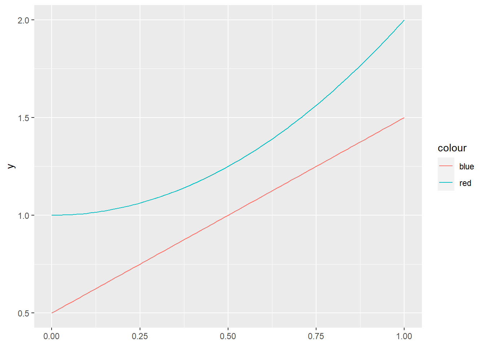

library(tidyverse)
data("morley")
morley |>
group_by(Expt) |>
summarise(mean = mean(Speed, na.rm=TRUE))# A tibble: 5 × 2
Expt mean
<int> <dbl>
1 1 909
2 2 856
3 3 845
4 4 820.
5 5 832. > Photo by Clint Patterson on Unsplash
> Photo by Clint Patterson on Unsplash
Recently I had updated my RStudio client and with it came a new update to R. This is an exploration of some of the most interesting changes from R 4.0 to R 4.1.
Due to the extreme popularity of the magrittr pipe (‘%>%’), R has developed its own native pipe (‘|>’).
library(tidyverse)
data("morley")
morley |>
group_by(Expt) |>
summarise(mean = mean(Speed, na.rm=TRUE))# A tibble: 5 × 2
Expt mean
<int> <dbl>
1 1 909
2 2 856
3 3 845
4 4 820.
5 5 832.From this example, it is apparent that the behaviour of the native pipe is the same as the magrittr pipe.
Some of the differences I have found is that the native pipe requires the brackets for functions, while the magrittr pipe will usually accept just the function name.
2 %>% sqrt()[1] 1.4142142 |> sqrt()[1] 1.4142142 %>% sqrt[1] 1.4142142 |> sqrtError: The pipe operator requires a function call as RHSOne disadvantage of the native pipe is that it doesn’t support the placeholder operator (.) which helps refer to the data in the function. This is a useful function of the magrittr pipe when the data isn’t the first argument in the function, such as the lm function.
morley %>% lm(Speed~Run, data = .)
Call:
lm(formula = Speed ~ Run, data = .)
Coefficients:
(Intercept) Run
856.0947 -0.3519 morley |> lm(Speed~Run, data = .)Error in is.data.frame(data): object '.' not foundOne advantage is there is no performance penalty as it acts the same as the function call. This is shown with the microbenchmark function, which shows not only the same level of performance as the regular call, but even the results themselves are shown as the function call.
library(microbenchmark)
microbenchmark(sqrt(3),
4 |> sqrt(),
5 %>% sqrt())Unit: nanoseconds
expr min lq mean median uq max neval
sqrt(3) 0 50 146 100 100 6800 100
sqrt(4) 0 0 42 0 100 300 100
5 %>% sqrt() 2300 2400 2730 2400 2500 26100 100So when should we use the native vs the magrittr pipe? Well, it looks like not all the functionality of the magrittr pipe is carried over, so it should still be continued to be used. The native pipe, however, provides a good performance boost, which makes it a better option for code written in functions and libraries. I think that the major application should be to increase the readability of library and function code.
There has been a simplification in the creation of lambda functions. The notation is simplified, while the results are the same.
library(tidyverse)
x <- 0:10/10
y1 <- function(x) x + 0.5
y2 <- \(x) x^2 +1
g <- ggplot(data.frame(x=x)) +
geom_function(fun = y1, aes(color = "blue")) +
geom_function(fun = y2, aes(color = "red"))
g